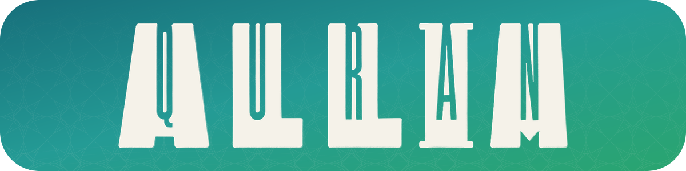

МЕТОДИКИ ХИФЗА
01 / 10
3новых пути
СВЯЗНОЕ ЧТЕНИЕ33 × каждый этап
Аят 133
+
Аят 233
↓
Аят 1 + Аят 233
Вся страница33
ВЕРХ СТРАНИЦЫдвижение снизу вверх
6
7
4
5
2
3
1 · фундамент ×33
1→3→2→1+2+3
С КОНЦА СУРЫ К НАЧАЛУсначала опора, затем пробел
страница×33
через одну×33
пропуск×33
✓Соединить три страницыпрочитать подряд без разрыва
Моя страница
✎
Фото остаётся на вашем устройстве
ПОЛНЫЙ ЦИКЛ ЛЯУХАфото — не конец, а начало тренировки
✎
ЛИЧНАЯ БИБЛИОТЕКАМой почерк · страница 1
Сверено ✓ · вслух 12 · без подсказки 3
СИГНАЛЫ ЗАНЯТИЯ
Точность82%
Связность61%
Возврат72%
→
ПЛАН НА СЕГОДНЯ
Продолжить 33 × связки
1 новый аят · 2 повторения · 18 минут
Почему: связное чтение требует укрепления✓Методика меняется только с вашим согласием
33↑✎
Ваш путь к Корану в сердце